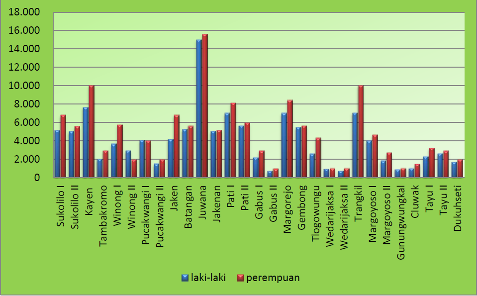

Persentase Hipertensi Menurut
Puskesmas di Kabupaten Pati Tahun 2019

Gambar tersebut menunjukkan kasus terbanyak di wilayah Puskesmas Juwana dengan
kasus laki-laki sebanyak 15.000 dan permepuan sebanyak 15.567 dan kasus
terendah di puskesmas gabus II laki-laki sebanyak 704 dan perempuan sebanyak
943.